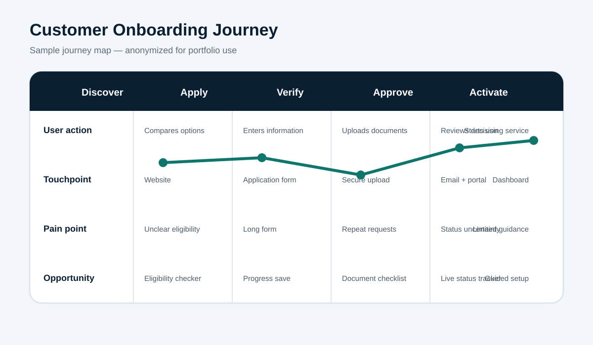

Scenario
A customer is completing a multi-step onboarding process that includes eligibility research, application entry, document verification, decisioning and activation.
Research questions
- Where do users experience uncertainty or repeat effort?
- Which touchpoints create the most support demand?
- What information would improve confidence at each stage?
Insights
The most significant friction occurs when users do not know whether they are eligible, which documents are acceptable or how long verification will take. The highest-value opportunities are an eligibility checker, a personalized checklist, saved progress and a live status tracker.
Measures of success
- Lower application abandonment.
- Fewer repeat document requests.
- Reduced status-related inquiries.
- Higher successful completion rate.
Portfolio note: Personas and pain points should be validated with interviews, support data and usability testing before implementation.